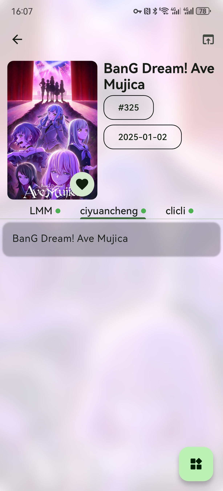
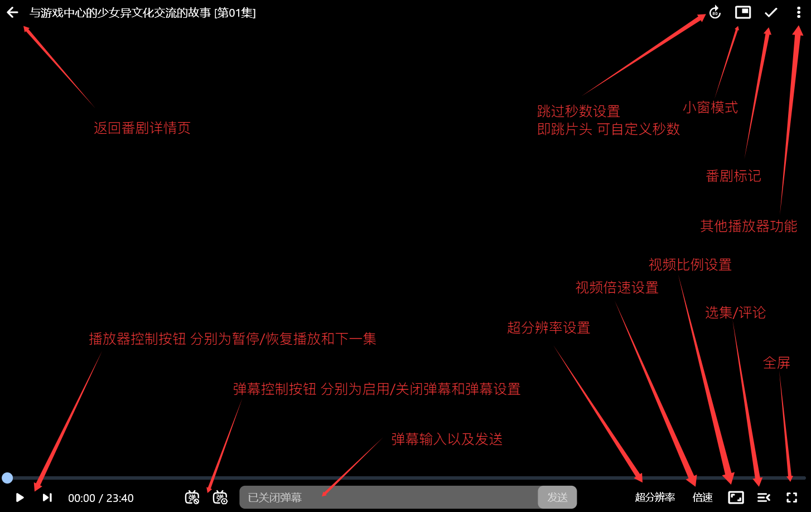

Kazumi 版本进化史：一个规则驱动的番剧播放器，如何长成了跨端全能选手
从早期只有简单播放能力的规则引擎，到如今覆盖多端、支持远程同步看番、弹幕正则屏蔽的全能播放器——Kazumi 的迭代史，是一条用规则生态撑开用户边界的路线。
我关注 Kazumi 有段日子了。现在打开它，Android 手机上一个应用图标就能搞定番剧搜索、多源切换、弹幕调节、甚至拉上朋友远程同步看同一集——这套组合打出去，放在国内番剧播放器圈子里不算花哨，但该有的都实打实地有。有意思的是，回看版本迭代脉络，Kazumi 走到今天不是一口气堆出来的，它的成长节奏透出一种很清晰的优先级。
现在这版：规则驱动的跨端全能
先说说当前版本的状态。Kazumi官网介绍的核心架构是「规则驱动」——它不内置视频源，而是靠一份份规则文件来适配不同的番剧站点。这意味着每当有新的番剧站冒出来，社区里写规则的人就能让 Kazumi 支持它，官方不用自己去对接每一家。规则体系后来还扩展到了弹幕来源，现在 BiliBili、Gamer、DanDan 三路弹幕都能接进来统一展示和屏蔽。
跨端这件事也基本成了。Android 是主战场，桌面端（Windows、Linux、macOS）这些年陆续跟上。不过 Linux 版有个有意思的小插曲——早期 tar.gz 包用户反馈"有应用跑起来但没图标也没托盘"，后来才搞清楚不是 bug，是 tar.gz 这个格式先天就缺桌面集成。官方后来把 deb、AUR、Flatpak 三种安装形态都补齐了，Debian 系用户从官方下载拿 deb 包，一条 apt install 就能装上完整带图标的版本。

来路：几个关键的转折点
样本文档里没有罗列完整的版本号对照表，但从功能的堆叠顺序和官方说明里，能隐约摸到几个关键节点。
第一个节点是 WebDAV 同步的引入。早期 Kazumi 的观看进度、收藏、弹幕屏蔽词这些数据都是本地存的，换个设备就得从头来一遍。WebDAV 同步把"观看记录"、"收藏"、"弹幕屏蔽词"三件事单独拎了出来，走一条独立的云端通道。这一步很关键——它让 Kazumi 不再是一个"单机播放器"，而是开始具备多设备场景能力。不过追番状态（比如 Bangumi 上标记的"想看/在看/看过")不在 WebDAV 里，那是后面 Bangumi 对接补上的事。
第二个节点是弹幕屏蔽的升级。最开始大概只有简单的关键词屏蔽——填一个词，带这个词的弹幕就不显示了。后来加了正则表达式支持，用斜杠包裹就能写复杂的匹配规则，比如 /剧透|结局|死了/ 一键屏蔽所有剧透词。翻Kazumi文档还能找到更多实用示例，像 /^[0-9]+分$/ 专门对付打分刷屏的弹幕。这一步的价值在于，它把"弹幕体验"从"能看"提升到了"能精确控制"。
第三个节点是 SyncPlay 一起看功能。这个功能让 Kazumi 能把分散各地的几个播放器锁在同一个进度上——任何一个人暂停、拖进度条、切下一集，所有人同步跟随。而且它用的是 SyncPlay 协议，不需要注册账号，只需要先切到相同端口的公共服务器，再填同一个房间号就行。房间里谁先加入，进度就以谁为准，之后谁都能控制。这个功能其实不是一下子就有的，我印象里是憋了三个版本才正式上线，中间有过测试版但一直没放进稳定渠道——团队在这件事上显然很谨慎。
第四个节点是跨端的铺开。从 Android 单端，到桌面端（Windows/macOS/Linux）陆续登场。Linux 版尤其曲折，从最早的实验性支持（嗅探走 GTKWebKit 脚本注入，稳定性一般），到后来补齐 deb 包、AUR、Flatpak 三种安装形态，再到桌面集成（图标、托盘、通知）都跟上。这个跨越不是简单的"跨平台编译"，每个平台上的嗅探方案、桌面集成细节都是单独处理的。
规律：团队一直在死磕什么
从迭代节奏里能看到一个很清晰的优先级线索——Kazumi 的团队一直在死磕「用户能不能用它覆盖完整的番剧观看闭环」，而不是去碰那些容易踩版权红线的地方。
闭环这件事，拆解下来就是：找番（规则驱动多源）→ 看番（播放器核心）→ 记番（WebDAV 记录 + Bangumi 状态）→ 聊番（弹幕）→ 同伴（SyncPlay 一起看）。Kazumi 基本把这五段都打通了。有意思的是，每一段都是"够用就行但做扎实"的风格——比如 Bangumi 对接只做追番状态同步，不做社区分享；SyncPlay 只实现进度同步，不做语音聊天；弹幕屏蔽给了关键词和正则两种方式，但不做关键词云之类的花哨功能。
另一个观察：规则驱动这个核心设计一直没变，所有新功能都是在这个地基上盖的楼。多源靠规则适配，弹幕来源也靠规则适配，甚至后来的规则分享、规则市场（社区层面的），都是围绕"写一份规则就能接入一个新源"这个设计哲学展开的。
那什么一直没做？商业化相关的东西几乎都没碰——没有会员、没有内置广告、没有付费解锁功能。版权合规的灰色地带也没去碰——官方面向用户的引导是"规则适配公开信息"，不涉及破解或盗版分发。还有一些用户呼声很高但团队一直没动的，比如 iOS 端（因为苹果的审核机制和开源番剧播放器的定位冲突很大），以及更重度的社区功能（评论、社交、推荐）——大概团队认为这些东西和播放器的核心定位离得太远。

预判：照这个路线，下一步大概率怎么走
说几个从迭代规律推出来的可能性，不当官方口径传。
第一，规则生态会继续变厚。现在规则是社区在维护，但还没有官方层面的"规则商店"——找一份好用的规则得去论坛或 GitHub issue 里翻。如果后面出一个内置的规则分发平台（搜索、评分、一键导入），应该是顺理成章的事。
第二，跨端的 Linux 实验性标签可能会摘掉。现在 Linux 版在官方文档里还是"实验性"标注，托盘、通知这些桌面集成细节因发行版不同表现不一。如果 GTKWebKit 嗅探方案在更多发行版上验证稳定了，这块应该会补完。
第三，iOS 端仍然是问号，但不是完全没可能——前提是团队能找到一种在 App Store 审核下活下来的产品形态（比如纯本地播放器、不内置任何在线内容），但这条路的博弈成本很高，短期内不乐观。
第四，细节体验会继续磨。比如弹幕屏蔽现在支持正则，但正则写起来对普通用户还是不友好——会不会出"可视化屏蔽规则编辑器"？WebDAV 同步的开关层级（总开关 → 子开关）有时候配错了会"明明开了却不同步"，这块的交互提示会不会更清晰？这类"把能用变成好用"的打磨，是 Kazumi 团队一贯的风格。
一句话收尾
Kazumi 走到今天，靠的不是某个炫酷的单点功能，而是用规则驱动这个设计理念，一步步把"找-看-记-聊-同伴"整个闭环填实了。它的版本史不是一部 changelog，而是一条用规则生态撑开用户边界的路线——这条路能走多远，取决于社区写规则的人和团队打磨地基的人，谁先跑不动。
这套资料同步到了 GitHub、Gitee、GitCode 三个仓库，想深挖源码或看规则维护动态的都能顺着其中一个继续翻。